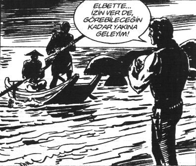

Halıkent otobüsüne bindi. On beş numaraya otururken yanında, cam kenarında, gözlüklü, hafif sarışın, efendi yüzlü birinin oturduğunu gördü. “Fıss” diye oturdu; fakat ilk şaşkınlıkla merhaba diyemedi.
Otobüs oldukça boş olmasına rağmen bu ikisi yan yana düşmüşlerdi. Adam bir kitap okuyordu. Hıdır’ın kitap işinden biraz hevesi kaçmıştı doğrusu. Jane Clarke’ın Maymuncuk kitabında “Asla, asla deme” yazıyordu. Yav, “Asla, asla deme” derken diyorsun ya “asla”yı. Hem “asla” deme diyorsun hem de “asla” diyorsun. Kitabı o sayfada kapatmıştı. “Fanatik gazetesi okurum, daha iyi” diye düşünmüştü. Fanatik’i açtı okumaya başladı.
Biraz sonra okuduklarını kapattılar, biraz da sessiz gittiler. Sonunda Hıdır dayanamadı, yanındakine ilk hamleyi yaptı.
– Yolculuk nereye?
– Detroit’e gidiyorum.
Bir an sessizlik oldu. Komşusunun gülümsediğini görünce, Hıdır da gülümsedi.
– Yav işte muhabbet açmak için sordum.
– Adım Erhan Özallı. Seninkisi?
– Hıdır.
– Bayan yanı muamelesi yapmam rahat ol.
– Demircili misin?
– Evet, sen “İçinden mi? Kimlerdensin?” demeden söyleyeyim. Tatarlardanım. Sen?
– Bizimkiler de Abbaslar. Uzaktan akrabayız ha. Senin Terzi Şerif Dedeni bizimkiler hep anlatır.
– Abi ne biçim lakaplar var ya! Dagil Dugullar, Ölmezler.
– 32 Benli Coni Kikirik diye adam var.
Kıh kıh gülüştüler. Hıdır’ın çocukluk arkadaşı şoför, Metin Altun da lafa karıştı:
– Gopcekler var abi. Adam sanki her an kopacakmış gibi.
– Pıh pıh pıhh.
– Ne iş yapıyorsun Erhan?
– Kişisel gelişim eğitimleri veriyorum.
Hıdır bir an, samyeli vurmuş mayıs çirozu gibi kaldı. Dondu.
Erhan: Ne oldu?
– Ya ben ilk defa kişisel gelişim uzmanı görüyorum da, hep kitaplarını okudum da...
– Sevmek istersen sev biraz! Belki ileride evde de beslersin!
– Pıh pıh pıhh.
Otobüs neredeyse boştu, rahat gülüştüler.
– Ya Erhan nasıl kişisel gelişim uzmanı olunuyor?
– Öncelikle işten atılman lazım. 2001’deki krizde beni çalıştığım ilaç firmasından attılar. Bir-iki yıl boşta kalınca zaten çok eğitim almıştım. Bende muhabbet de iyidir, oralarda öğrendiklerimin notları da vardı. Şimdi hem kendim eğitim veriyorum hem de üç tane eğitim firması adına eğitim veriyorum. Verdiğim eğitimler aynı. Bu şirketler ihalelere giriyor, en düşük fiyatı veren alıyor ihaleyi. Ben de girip eğitimi veriyorum.
– Hepsinde farklı eğitim.
– Yo benim eğitimim hep aynı.
– Hadi ya?
– Yalnız eğitimde “İşten atıldım” demeyeceksin.
– Nasıl?
– Anlatırken “2001 yılında hayatımı gözden geçirdim. Artık yaptığım işten mutsuzdum. Kendimi tekrar ettiğimi fark ettim. İstifayı verdim ve danışmanlığı seçtim” dersen çok havalı oluyor. Yoksa “Beni işten attılar” dersen tadı olmuyor!
– Pıh pıh pıhh. Hangisi daha zevkli. İlaç mı, eğitim mi?
Erhan: İlaç işi biraz korkutucu.
– Nasıl?
– Yani hem ülkeye hem de dünyaya ayrı ayrı bakmak lazım. Bir kere Türkiye’de ilaç reklamı yapılmıyor. İlaç firmalarından kimisi o reklam bütçesini doktorlara kendi ilaçlarını yazdırtmak için kullanırlar.
– Promosyon değil mi?
– Doktorun muayenehanesini sıfırdan döşemek, evine plazma almak, tatile göndermek promosyonsa evet. Yazdığı ilaçtan komisyon alan doktorlar var desem?
– Hadi yaa!
– Bak sen bir Bağ-Kur’lu, SSK’lı olarak devlet hastanesine gidip ameliyat olamazsın. Önce doktorun muayenehanesine gider para ödersin. Sonra adam, devletin hastanesinde senin tahlillerini yaptırtır. Sonra hastanede devletin imkânlarıyla ameliyat eder, devletten maaşını alır, sen yine muayenehanesine gider, “bıçak parası” adı altında rüşvet verirsin.
– “Bıçak parası” sanki kasap gibi. Korkunç bir ad.
– Yapılan daha korkunç değil mi? Devletten para aldığı bir iş için senden açıktan para alması. Rüşvet alan gümrükçüden ne farkı var? Bak eskiden devlet kuruluşlarında diş hekimlerine iş yaptıramazdın. Baktıkları hastaya göre prim verilince % 90’ının yaptığı iş dört katına çıktı. Eskiden de yaptığı iş için maaş alıyordu; ama çalıştıramıyordun. SSK’ya satılan ilaçların piyasanın dört katı fiyata satıldığıyla ilgili gazete haberlerini okumuşsundur. Sonra hem şirketten hem de devletten bu işle ilgili kimsenin hapse atıldığını duydun mu?
– ...
– Demek ki herkes bir şekilde çöplüğün içinde. Bak tüp bebek için Anadolu’dan büyük şehirlerdeki tüp bebek merkezlerine hasta sevk eden doktorların bir bölümü, gönderdikleri hasta başına o merkezden 500 dolar civarında el altından prim almazlar; alsalar ne ahlaksızca olurdu değil mi? Bir diyaliz merkezine, bir böbrek hastasını bağlayan doktor oradan prim alsa ne korkunç olurdu değil mi? Birçok ilaç arasından en iyiyi değil de, prim aldığı ilacı yazsa ne feci olurdu değil mi?
– Allah’tan öyle değil!
– Allah’tan!
Erhan: Basında ikide bir Anadolu’da sağlık taraması haberleri görürsün. Bunları ilaç firmaları finanse eder ve devletin doktorları taramayı yapar. Yalnız ilginçtir, bu sağlık taramaları genelde hep iki alanda olur. Tansiyon ve diyabet hastalarını tespit etmek için. İkisinin de ortak özelliği nedir bilir misin?
– Hayır.
– Tedavisi yoktur. Hastayı tespit ettiğin an ömür boyu ilaç kullanmak zorundadır. İlaç parasını da devlet ödeyeceği için sağlık taramalarını hep bu iki alanda yaparlar.
– Vay be!
– Vay be ya!
– Ya Erhan Ağabey, bizim bir tanıdığımızın hastalığı vardı. Bir ilaç kullanıyordu. 14 yaşında pırıl pırıl bir çocuk Hakan. Hakan’a ayda iki kere kriz geliyordu. Sonra böyle ilaç firmasında çalışan bir dostumuz “Siz bu ilacı Almanya’dan getirtin” dedi, nedenini söylemedi. Biz ilacı oradan getirtmeye başladık. Aynı yabancı şirketin orada ürettiği aynı ilaç, her şeyi aynı. Şimdi bizim aslan yılda bir kriz geçiriyor. Şok olduk. Niye? İlacın adı da...
– Bak Hıdır hemşerim. O ilacı çok iyi biliyorum. Etken maddesi bir bitki özü, dünyada üç yerde yetişir. Bu üç yerden birinden çıkan etken madde çok güçlüdür; ama diğer iki yerin dört katı fiyatadır. Avrupa’da ürettiklerine o etken maddeden koyuyorlar. Türkiye ve üçüncü dünya ülkelerindekine en ucuzunu. İkisinde de etken madde 100 mg görünüyor. Arada kazandığın paranın yüzde birini bunu kontrol edecek adama rüşvet olarak verdiğinde, kimse bir şeyden haberdar olmaz.
– Ağabey, Türkiye’deki sağlık çürümesinin nedeni Yunanlılar!
– Nasıl yani?
– Ağabey doktorlara Hipokrat yemini ettiriyoruz. Bizimkiler Allah’ın Yunanlısının yeminini niye tutsun. Çevirtsen yemini Türkçeye bize uygun yemin koysan. Hastaya iyi bakmayanı Allah bildiği gibi etsin, yüzdeyle çalışan aha böyle olsun gibi. Bir de en sonda, vallahi de billahi, çoluğumun çocuğumun ölüsünü öpiim dedirtsen, bak olay nasıl çözülüyor. Hep Yunanlıların yüzünden. Pıh pıh.
– Hı ho haa.
– Lan Metin önüne bak, titretme arabayı, gülünecek ne var?
Erhan: Bak Hıdır. Bir ilaç Türkiye’ye geldikten bir yıl sonra, yerli firmalar ilacın ucuzunu imal ediyorlar, buna jenerik ilaç deniyor. Batılı firmalar çok etkili bazı kanser ilaçlarını jeneriği yapılmasın diye Türkiye’ye getirmiyorlar. Süre üç yıla çıkarsa getirecekler.
– Ağabey, insan hayatı bu kadar değersiz mi? Zaten kazanıyorsun dünyada milyarlarca dolar. Birkaç ilacından da az kazan. Getirirse yine para kazanacak; ama üç yıl değil de, bir yıl kazanacak değil mi?
– Evet, ama hükümet o süreyi uzatana kadar o ilaçları Türkiye’ye getirmiyorlar.
– Ağabey, sadece bir kanser hastasını kurtaracak olsalar bile getirmeleri lazım. Ne olur az kazansalar.
– Bak Sudan’da, tüm Afrika’ya AIDS ilaçlarının jenerik ilaçlarını imal eden bir ilaç fabrikası vardı. Bugün Afrika’nın üçte biri AIDS’li. Müthiş pahalı ilaçları alma ihtimalleri yok. Adamların yiyecek yemeği yok, AIDS ilacını nasıl alsın?
Sudan’daki fabrika Robin Hood gibi tüm Afrika’nın ilaç ihtiyacını karşılıyordu. ABD hükümeti açıklama yaptı: “Burası bir kimyasal silah üretim merkezidir.”
Bunun üzerine Sudan hükümeti fabrikayı aynı gün herkesin kontrolüne açtı. Gazeteciler, silah uzmanları fabrikayı gezdiler ve rapor verdiler. “Burada kimyasal silah üretimi yapılamaz” diye. Sudan hükümeti açıklama yaptı: “Burada üretilen ilaçlara Afrika’nın çok ihtiyacı var. Fabrikamız Birleşmiş Milletler uzmanlarının denetiminde çalışabilir” diye. Amerikalılar işin sarpa sardığını görünce, ABD uçakları bir gecede fabrikayı yok ettiler.
Bugün, bırak ilaç almayı, adamın yiyecek yemeği yok.
– Ya ağabey, zaten bu kadar para kazanıyorsun, Afrika’yı yüzlerce yıl sömürmüş, adamları bu hâle getirmişsin. Bırak Afrika’dan da daha az para kazanıver, ne olur sanki?
– Doğru!
– Ya baba, korku filmi gibi!
– Ben Türkiye’yi daha çok Quentin Tarantino filmlerine benzetiyorum. Adamın filmlerinde gözüne soka soka, öyle bir dehşet vardır ki ilk kafa koptuğunda şok olursun, sonra birinin kolu kopar, ürperirsin. Sonra ötekinin gözü çıktığında, bir için titrer. Sonra alışırsın; kopan bacaklardan koyu kanlar fışkırırken sen pipetten aynı renkteki colayı çekersin; kadın adamın parmaklarını kanlarıyla dilimlerken sen finger patates menünü ketçaba banarak yersin. Sonra filmin devamında alışır, daha kötüsü, daha fazlasını istersin. Ülkede olanlar korkunç değil, bizim alışmış olmamız korkunç. 1950’lerde Türk filmi gibi olan bir ülkeydik. Bak o filmlerde kim kötü kim iyi öyle bellidir ki. Şimdi belli değil. Neyin iyi, neyin kötü olduğu belli değil. Kimin aslında iyilik, kimin kötülük yaptığını da anlayamazsın. Tarantino filmlerindeki gibi sürüyle uzun diyalog ve anlamsızlık var. Bir de ucunun nereye gideceği belli olmayan bir şiddet.
Bak yanına ben oturdum. Bildiğim için sana tıp ve ilaç dünyasının % 1’ini anlattım. Gözüm kapalı bir fili tarif edecek kadar bilgiliyim. Yanına oturan hemşerin gümrükçü olsaydı, gümrüklerdeki pisliği anlatacaktı. Milletvekili olsa devlet yönetimindeki, hâkim olsa hukuktaki, iş adamı olsa iş hayatındaki, sporcu olsa spordaki, subay olsa ordudaki, öğretmen olsa eğitimdeki, gazeteci olsa basındakini... Sen hepsini böyle gözlerin fal taşı gibi dinleyecektin.
– Ya baba, bütün gün “Semra Hanım’ı; yok penaltıydı, değildi diyen adamları; şunla şu boşandı mı?”yı dinliyoruz bunlardan niye haberimiz yok?
– Bunu aslında sana sormalı. Bak benim haberim var...
– Belki gazeteciler de alışmıştır.
– Ya Erhan Baba, peki sen bu bildiğin bölümü anlatsan ya da yazsan.
– Ya yazılır mı? Deli olmak lazım bunları yazmak için. Ben şimdi ilaç firmalarına da eğitim veriyorum. Eğitim veren birinin bunları yazması için aptal olması gerekir. Bunları yazsam bir daha benden hayatta eğitim almazlar. Yazmak için öküz olmak lazım. “Bindiğin dalı kesmek” denir buna. Sırf beş-altı sayfa yazı için milyarlar feda edilir mi? Edersem adım salağa çıkar. İleride kitap yazarsam bak bu elimdeki gibi olur.
– O ne hocam?
– Bak adı Güç Sihirbazı, Richard Templar diye bir adam yazmış. “Yükselmek isteyen ama nasıl bir yol izleyeceğini bilmeyenler için” diyor.
Hıdır bir anda “paralize” oldu.
Hıdır’ın beynindeki bulutlar hareketlendi.
Hayatı film şeridi gibi diyaframından geçti. Sağ ayak başparmağının titrediğini fark etti. Bu alt başlıklar değil miydi onu çarpan!
“Aha tam benim kitap!” kelimeleri döküldü ağzından.
– Ya kitabı alabilir miyim?
Erhan: Boş ver alma!
– Vay baba, sen öğren nasıl yükseleceğini, biz kerkenez gibi yerimizde sayalım.
– Bak sayfa 181’deyim. Ne yazıyor: “Patronunuz sizin müşterinizdir; meslektaşlarınız ise rakibiniz! Rakip meslektaşınıza terfi etmek istediği iş hakkında ‘Reha’nın yerini aldığın zaman bütün o toplantıları, insanı idare etmeyi düşünüyorsun, hatırlıyorum da bana toplantılardan nefret ettiğini söylemiştin.’ Rakibiniz bütün o bitmek bilmeyen toplantıları düşünmeye başlayacak ve bu işten vazgeçecektir.”
– Yuh! İş arkadaşımız yükselmek istediği için rakibimiz mi oluyormuş?
– Evet!
– Ya ağabey, nerede kaldı takım ruhu, iş birliği?
– Adı kişisel gelişim. ABD’den çeviri “personal development.” Aslında çeviriyi “kişisel ilerleme” şeklinde yapmak, gerçek anlamı daha doğru verirdi. Kendin nasıl ilerlersin? Milletin sırtına basarak. Sen ilerle yeter. Yalnız bu arada bu kitabı rakibin de okuyor, o da sana taktik yapıyor. İş yerinde dürüstlük sıfır.
– Erhan peki bizimkiler?
– Bak ben firmadayken çok eğitim aldım. Cidden iyi eğitmenler, yazarlar var. Fakat çok büyük bölüm kolaj.
– Ağabey, kolaj ne demek? Bizim kız da söyledi soramadım kerataya.
– Patchwork diye bir el sanatı var biliyor musun? Onun gibi bir şey.
– Baba, Türkçesi yok mu bunların?
– Var da, bizim işte ne kadar İngilizce laf edersen o kadar erdemli olursun. Eğitimde kendi kültüründen değil de Amerika’dan örnek verirsen, itiraz gelmez.
– Gavur yapıyor! Pıh pıh pıhh.
– Aynen öyle. Bak böyle kitap okuyacaksan önce adamın özgeçmişi var mı yok mu ona bak. Çoğunun özgeçmişi yoktur. Varsa şuna bak: Çalıştığı işlerde iki yıl kalabilmiş mi yoksa iki yıl orada, hop sonra oraya, hop oraya dolaşmış mı?
Bir de etrafına sormak lazım. Anlattıklarıyla yaptıkları birbirine uyuyor mu? Bir iletişim eğitimi alıyoruz. Otel beş yıldız, hoca şöhret... Sabah üç saat anlattıklarından büyülendik, “Lan” dedik, “insan evladı böyle olmalı.” Öğle yemeğine toplu çıktık. Çorba siparişi alındı, beş dakika sonra çorbalar geldi. Biraz geç sayılır. Hepimiz çorbamızı alırken hoca kalktı, garsona bir bağır sen. Kalktı gitti. Öğleden sonra yine mükemmel şeyler anlattı; ama hepimizin bir kulağından girdi, bir kulağından çıktı. Sonra insan kaynaklarında bir arkadaşım var, onunla konuştum. Onlara yapmadığı kapris kalmamış. Bir paraya anlaşmışlar, ekstra o parası, bu parası derken bunaltmış bunları. Bir başkasını, arkadaşım kongreye çağırıyor. Parada anlaşıyorlar, üç gün kala asistanı arıyor, “Uçak bileti business class olmazsa gelmez hocamız!” diyor. İletişim, kendini tanıma, zamanında yaşadığı garibanlıkları anlatan bir uzman. Arkadaşım farkı cebinden karşılamış. Business Class gelmiş amcam. Asistanı bir daha aramış, “Otelde üst ve boş katta oda olmazsa hocamız kalamaz” demiş; rica minnet otelde onu da ayarlamışlar. Konferansta 1000 kişiye mütevazılığını anlatmış.
– Erhan, kitaplarda yazılanları yapıyorum, adam yapmış süper. Ben yapıyorum, bahtsız bedeviyi çölde develer kovalarmış misali, Konya Ovası’nda ağaca tosluyoruz. Bunlar nasıl başarıyor ağabey?
– Bak Hıdırcığım, anlatırken, yazarken önce oku atıyorsun. Saplandığı yere hedef çiziyorsun.
– Nasıl?
– Seni eşek teperse, “Çiftenin döt üzerindeki etkisi üzerine yaptığım bir araştırmada...” diye anlatacaksın.
– Ya, ben anlamadım.
– Dereye düşsen, “Geçen, arkadaşlarla rafting yapıyoruz...” diyeceksin. İşten atılırsan, “Hayatımın tekdüzeliğini fark ettim ve yeni bir hayat biçimi seçtim” diyeceksin.
Bak bizim sektörde, bir adam uzman olmak için altı-yedi yıl Tıp okuyor, sonra dört-beş yıl ihtisas yapıyor, on-on bir yıl okuyup uzman oluyor. Ben işten atıldım, bir sene sonra üç eğitim şirketinde kişisel gelişim uzmanı olarak eğitim vermeye başladım. Yönetim eğitimi veriyorum, içerideki adam benden iyi yönetici, o yüzden dayıyorum Mc Gregor’un x-y teorisini, Johari’nin Window’unu, Maslow’un teoremini. “Mezarlıkta türkü söyler gibi” öğrenciler içeride sessiz yatıyor, ben “valleys, valleys” (yaylalar, yaylalar) hasarsız çıkıyorum içeriden.
– Baba, bizim Şino’nun psikolog bir arkadaşı var, ikisinde de ikişer çocuk, psikolog Şinasi’ye devamlı bilimsel yaklaşım öğretiyor; şöyle yaparsan çocuk özgüven kazanır, böyle yaparsan çocuk girişken olur. Şino’da hiç teori yok. Sadece çocuklarını çok seviyor. Şimdi dört çocuk da büyüdü. Şinasi’ninkiler canavar, girişken, mutlu. Psikoloğun çocuklar bir acayip.
– Hıdır Ağabey bak ne anlatacağım. Bizim bir arkadaş üniversiteye hazırlık için özel ders veriyor. Üç-beş sene önce ünlü bir adamın oğluna ders vermek için villalarına gidiyor. Adam oğluna bizim arkadaşın yanında ağza alınmayacak bir küfür etmiş. Geçenlerde adamın çocuk yetiştirme üzerine kitabı çıktı.
– Herhâlde kafasına kafasına vurmayın, sülalesine sövebilirsiniz yazıyordur.
– Ağabey aha bu işte. Geçen TV’de bir sabah kadın programına, keçi sakallı bir kişisel gelişim uzmanı çıkarmışlar, Bülent Okutucu anlattı; bir de profesör psikiyatrist var, dünya çapında bir uzman, ikisi de ayrı konularda konuk. Kişisel gelişim uzmanı, bir yaşam felsefesi yaratmış onu anlatıyormuş. Profesör sonunda dayanamamış. “Beyefendi ciddi bir tedaviden geçmeli” demiş. Stüdyo yerlerde. Ben seyretsem adını da verirdim.
– Pıh pıh pıhh.
Metin: Abi sohbet muhabbet, Yiğitler’e kadar geldik. Enkişle hiç gülmemiştim.
– Sen sanki arabayı kullanmadın ki vere bizi dinledin. Kih kih kih.
Erhan: Hıdırcığım bizim hanım Devlet Tiyatrosu’nda, ne emrin olursa ara.
– Erhan, aynı şekilde. Bakanlıktayım ne işin olursa rüşvetsiz, rüşvetli kısa sürede hallettiririz.
– Pıh pıh pıhh...
“Sen günlük rutininde mantra’ları kullanıyor musun?”
“Tabii ki.” [19]
